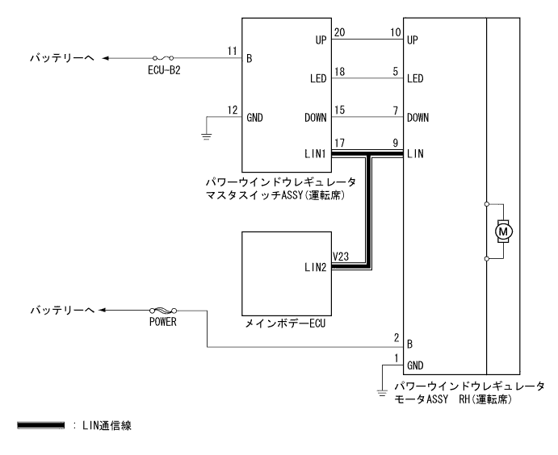

Power Window System Driver Door Glass AUTO UP/DOWN Does Not Operate (Manual Operation Works) |
) has not been performed, AUTO will similarly not function.)
| Step 1 | Read TaSCAN Data (Main Body) |
Data Monitor
Using SST (TaSCAN), check the Body Electronics Area Network (LIN) connection status of the power window regulator motor assembly RH (driver side).
| Item Name [Symbol] | Item Description/Display Range | Standard Value | Remarks |
|---|---|---|---|
| D seat motor ECU connection status [DMRC] | Connection status between power window regulator motor assembly RH (driver side) and body ECU/display range: Not connected - Connected | Connected: When connection is detected Not connected: When connection is not detected | - |
|
| ||||
| OK | |
| Step 2 | Read TaSCAN Data (Power Window SW) |
Data Monitor
Using SST (TaSCAN), read the data when operating the power window regulator master switch assembly (driver side).
| Item Name [Symbol] | Item Description/Display Range | Standard Value | Remarks |
|---|---|---|---|
| D seat P/W AUTO SW [DPAS] | Driver side AUTO switch operation signal/display range: OFF - ON | ON: AUTO switch operating OFF: Neutral | - |
|
| ||||
| OK | |
| Step 3 | Read TaSCAN Data (D Seat Motor) |
Data Monitor
Using SST (TaSCAN), read the data when operating the power window regulator master switch assembly (driver side).
| Item Name [Symbol] | Item Description/Display Range | Standard Value | Remarks |
|---|---|---|---|
| D seat P/W AUTO SW [DPAS] | Driver side AUTO switch operation signal/display range: OFF - ON | ON: AUTO switch operating OFF: Neutral | - |
|
| ||||
| OK | ||
| ||